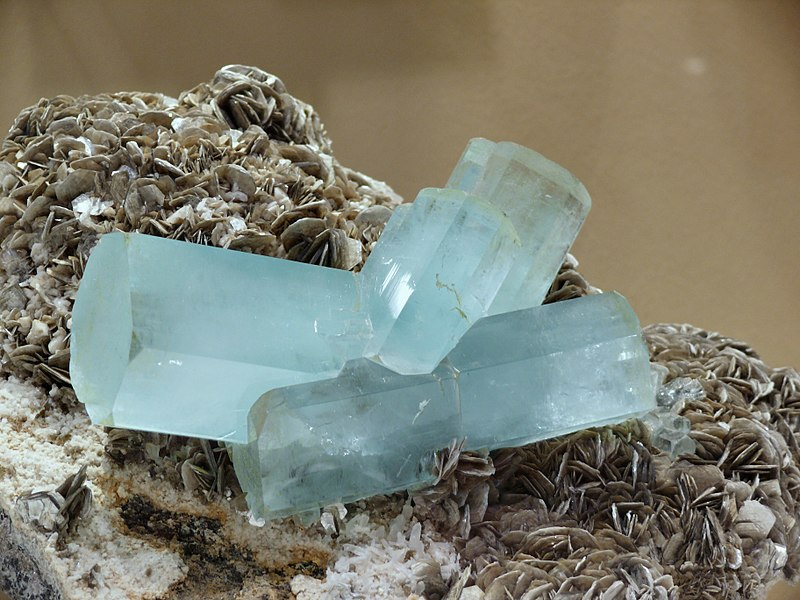

Aquamarine
Information
Aquamarine was first found in Brazil but it can also be found in Russia, Kenya, Madagascar and USA. The greenish-blue stone was used in the past as a protective talisman to bring good luck on the open waters and against misfortunes at sea. Aquamarine evokes the purity of crystal blue water, and the reaxation and feeling of calm that the sea brings. Spiritually, Aquamarine is associated with trusting and letting go. It is also used as a symbol of protection and fearlessness. The gem helps people overcome any anxieties associated with communication.
Health Benefits
Link-TextOutfitInspos
Some outfits inspos who match perfectly with the black green stone